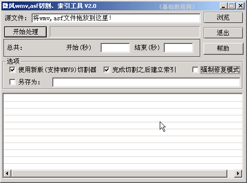
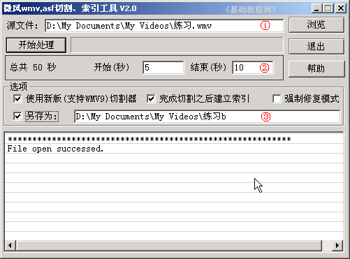
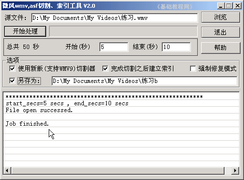

视频编辑 基础入门教程
七、视频剪辑2 返回目录
在上一课中，我们学习了用Windows Media Encoder剪辑视频，我们还可以用其他工具，这一课我们来学习用“微风wmv,asf切割、索引工具”，
这是一个免费的小工具，文件大小436KB，可以用来剪切WMV视频文件，华军的下载地址为：http://www.newhua.com/soft/337.htm ；
1、启动软件
1）安装后在开始菜单中，找到点击打开，出现一个面板；

2）按照从上到下的顺序，在上面的第一行右边点浏览，找到上次在“我的文档－我的视频”里存的“练习”，点击打开，
中间会出来秒数，这儿大约是50秒，在开始里填入5，结束那儿填10，注意结束那儿要比总长度少1，也就是最多是49秒；
点下面一行的另存为，打勾选中，出来一个保存对话框，找到“我的视频”文件夹，文件名那儿输入“练习b”，若要剪切另一段，需要重新点“另存为”前面的勾，否则会覆盖前一个；

3）检查一下，没什么错误就点上面的“开始处理”按钮，过一会儿，会提示成功；

然后到“我的文档－我的视频”中，就可以找到一个刚才剪辑的文件；
本节学习了用工具软件，剪切视频文件的基本方法，如果你成功地完成了练习，请继续学习下一课内容；
本教程由86团学校TeliuTe制作|著作权所有
基础教程网：http://teliute.org/
美丽的校园……
转载和引用本站内容，请保留版权信息和本站链接。